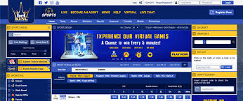

HOW TO REGISTER FOR A SPORTY ACCOUNT
Step1: To register and open an account on BetKing, please go to www.betking.com On the homepage displayed, click on the 'REGISTER' button on the top right side.
STEP 2: Provide all the necessary information including your name, email address, mobile number, and password. Click the 'confirm' button to confirm all the information you have provided and submit.
STEP 3: After the registration is complete, you will receive a confirmation message on the screen. You will also receive a confirmation mail to the email address provided. Click the link to confirm your email address.
STEP 4: Please enter your username and password to log into your account. You are now royalty and ready to start playing like the king that you are. May you play long!
Unless Otherwise Stated, all Football (soccer) match markets are based on the result after the scheduled 90 minutes play.In competitions where the rules dictate a different duration, this will be used as the scheduled match time in the same way. This scheduled match time includes any added injury or stoppage-time but does not include Extra Time or time allocated for a penalty shootout.
MATCH NOT PLAY AS LISTEDIf a team starts a match with fewer than 11 players, all bets on that match will be void.
Football kick-off dates and times displayed on the BetKing website are provided in good faith for indication purposes and are not guaranteed to be correct.
If an official fixture involves different teams to those listed on the BetKing website, then all bets on the match will be void.
If the home and away teams for a listed match are reversed (e.g., the match is played at the away team's ground) then bets placed on the affected markets will be void. For matches played at neutral venues, the team listed on the left are classed as the 'home' team for settlement purposes.
If a match does not take place, bets will be void and stakes returned to the player. Where a void selection forms part of a multiple bet, that leg will be void whilst the remainder of the bet will continue as normal.Unless otherwise stated, if a match is postponed or abandoned, all bets related to that event will remain open until midnight (WAT) of the day following the date originally scheduled for the match. If it does not take place or is not completed within this time, all bets related to the event will be void, except bets placed on markets which have been unconditionally determined, which will stand.For example, if a match is abandoned with the score at 2-1, bets on Over/Under 2.5 goals will stand.Where an event is postponed or cancelled due to an outbreak of Covid-19 amongst competitors, bets will be made void as soon after official confirmation as reasonably possible.
Bets on Football matches labelled “Extra Time” will be settled excluding penalty shootouts. Bets on penalty shootouts are accepted separately.
All bets are settled on the final score at the end of the match. If a result is changed or declared void for any reason by governing body at any time following the end of the match, such change will not alter settlement.Should a match be concluded early by the referee's final whistle, but be deemed to have reached its natural conclusion i.e. not abandoned, all bets will be settled on the result at the final whistle.
TO SEE THE FACE OF OUR WINNER CLICK HEREGENERAL
Live betting is a form of betting that takes place while an event is in progress. Once confirmed, both by the player and by the BetKing, the bet realised during live betting cannot be changed or cancelled.
Considering the delay of television signal and internet connection, there is a buffer time between placing the bet by the player and acceptance and validation of the bet (for security reasons). If in that period selected odds become removed or suspended (for example a goal is scored, etc.), the bet will automatically be rejected. In case that the bet has been placed during the match actions whose outcome could drastically change the value of the odds, the length of bet acceptance time will be extended, and the bets will be accepted or refused depending on the outcome of the risky situation. BetKing reserves the right to refuse the bet after it has been submitted to manual approval, as well to reduce the value of the amount staked. Where there are reasons to believe that a bet is placed after the outcome of the bet is known, BetKing reserves the right to void the bet.
TO READ ABOUT THE WEBSITE ONCE AGAIN CLICK HEREIn case that an obvious error has been identified all bets with that error will be cancelled. If the format of a match differs from information provided on our site, BetKing reserves the right to void bets
The live betting schedule can be changed due to changes of the match broadcast schedule. Some match broadcasts can be late, and the delay time depends on the receiver through which image or data are being received.
If a match is interrupted and not continued/finished by midnight (local time), or if there is no official notification published by midnight (local time), that it will continue within 48 hours of the original start time, then all markets, apart from any unconditionally determined markets will be voided. In the event of notification, if the game is not started within 48 hours of the original start time or if further official notifications schedule the game beyond the 48-hour window then bets on unconditionally determined markets will be voided.